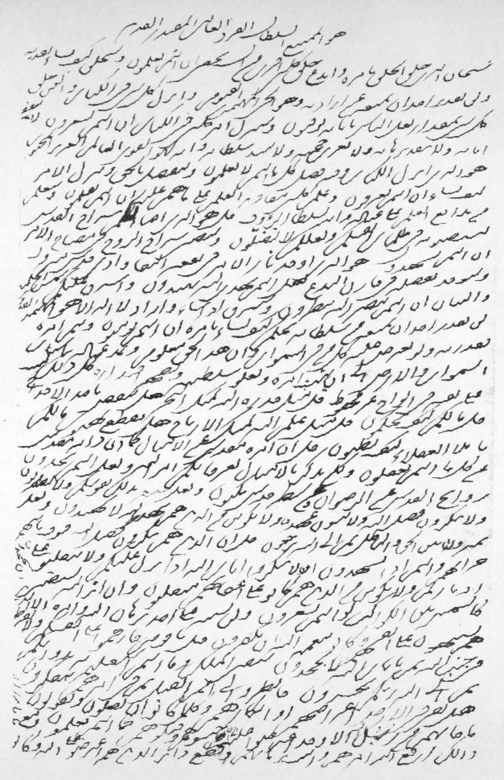

The Revelation of
Bahá'u'lláh
Adib Taherzadeh |
|
The Revelation of
Bahá'u'lláh
GR |
|
46 High Street, Kidlington, Oxford OX5 2DN
© ADIB TAHERZADEH 1977
EXTRACTS FROM THE FOLLOWING WORKS
By Bahá'u'lláh: Epistle to the Son of the Wolf, Copyright 1941, © 1969 by National Spiritual Assembly of the Bahá'ís of the United States; Gleanings from the Writings of Bahá'u'lláh, Copyright 1939 by National Spiritual Assembly of the Bahá'ís of the United States; The Kitáb-i-Íqán, Copyright 1931 by National Spiritual Assembly of the Bahá'ís of the United States; Prayers and Meditations by Bahá'u'lláh, Copyright 1938 by National Spiritual Assembly of the Bahá'ís of the United States; By 'Abdu'l-Bahá: Memorials of the Faithful, Copyright 1971 by National Spiritual Assembly of the Bahá'ís of the United States. By Shoghi Effendi: The Advent of Divine Justice, Copyright 1939, © 1967 by National Spiritual Assembly of the Bahá'ís of the United State; The World Order of Bahá'u'lláh: Selected Letters, Copyright 1938, © 1972, 1974 by National Spiritual Assembly of the Bahá'ís of the United States. God Passes By, Copyright 1944, © 1972, 1974 by National Spiritual Assembly of the Bahá'ís of the United States; The Promised Day Is Come, Copyright 1941, © 1969 by National Spiritual Assembly of the Bahá'ís of the United States; Miscellaneous: The Dawn-Breakers: Nabíl's Narrative of the Early Days of the Bahá'í Revelation, published 1932 by National Spiritual Assembly of the Bahá'ís of the United States. The Bahá'í World: A Biennial International Record: 1938-1940, Copyright 1942 by National Spiritual Assembly of the Bahá'ís of the United States and Canada.
|

In Bahá'u'lláh's own hand, revealed soon after the attempt |
|
To those brilliant souls the Bahá'í Pioneers and Teachers in every land who have expended their lives and their substance in the path of Bahá'u'lláh |